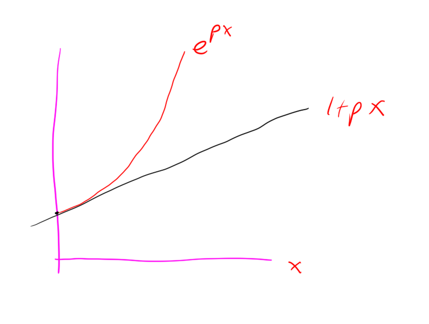

Randomized Algorithms
Rand: “Mirror, mirror, hanging on Alek’s wall (no I don’t actually have a mirror that would be kinda creppy / narscisistic, you get the point, maybe read this as”webcam, webcam…“) who is the fastest sorting algorithm of them all”
Alek: “Ummm, Probably quicksort”
Rand: “But it has worst case performance like \(O(n^2)\) !!! That’s so trash. What about mergesort?”
Alek: “Actually it turns out that with high probability in n quicksort is super fast, in particular \(O(n \log n)\), and actually in particular way better than mergesort because the expectation of the number of comparisons that it makes is like \(2n \log n\) which is a super good constant”
Rand: “hmmm, that sounds pretty good. tell me more.”
Alek: “OK, and as an added bonus I’ll refrain from my entropy joke”
What is a randomized algorithm?
In this post I’m going to discuss algorithms that use randomness. Randomness plays a crucial role in many algorithms. For example, randomness is used in
- Getting a good fast heuristic approximate solution to a problem
- Cryptography: randomness is the key to security
- Analyzing algorithms that deterministically get the right answer, but use randomness to get there. With such an algorithm it is often desirable to show that the algorithm is fast “with high probability”
Analysis of “probably fast” algorithms
Quicksort is the prototypical example (in my opinion) of a randomized algorithm that is fast “with high probability”.
Definition. An algorithm is said to be fast with high probability in \(n\) (input size) if for any constant \(c\), the algorithm’s probablity of “being fast” can be made \(1/n^c\).
I’d like to analyze the running time of quicksort using something called a concentration bound, but first I’ll quickly talk about some basic probability theory.
Probability background
I define some basic concepts:
Definition. A probability space is defined by 3 sets \((\Omega, \mathcal{F}, P)\) that satisfy some axioms. \(\Omega\) is the sample space, \(\mathcal{F}\) is the set of events, and \(P\) is a function \(P: \mathcal{F} \to [0,1]\) that assigns probabilities to events. The axioms that \((\Omega, \mathcal{F}, P)\) must satisfy are:
\(\Omega \neq \emptyset\)
\(\mathcal{F}\) is a collection of subsets of \(\Omega\), and it is a \(\sigma-\)algebra on \(\Omega\), that is
- \(\Omega \in \mathcal{F}\) (contains the sample space)
- \(A \in \mathcal{F} \implies (\Omega \ A) \in \mathcal{F}\) (is closed under complements)
- \(A_i \in \mathcal{F}\) for \(i=1,2,\ldots\), then \(\bigcup_{i\geq 1} A_i \in \mathcal{F}\) (is closed under countable unions)
\(P\) is a probability measure, so
- \(P: \mathcal{F} \to [0,1]\)
- \(P(\Omega) = 1\)
- If \(E_1, E_2, \ldots \in \mathcal{F}\) are disjoint events then \[P\left(\bigcup_{i\geq 1}E_i\right) = \sum_{i\geq 1} P(E_i)\]
Definition. A random variable defined on the probability space is a (measurable) function \(X: \Omega \to S \subset \mathbb{R}\) (\(S\) is some state space).
Definition. The probability of an event \(A \subset S\) is \[Pr(A) = P(\{\omega \in \Omega : X(\omega) \in A\})\]
begin remark For this post, only discrete probability is of interest (stay tuned for a post on measure theory and continuous probability at some point in time!) Thus, we take \(\mathcal{F}= \mathcal{P}(\Omega)\) (the powerset). Also the state space will always be a (finite) subset of \(\mathbb{R}\) in this post. end remark
Definition. A bernouli random variable with parameter \(p\) is defined by \[Pr(X=0) = 1-p \quad Pr(X=1) = p.\] Note that this is just a coin that is heads with probability \(p\) and tails otherwise.
Definition. Another really common type of random variable is a “binomial random variable” This is the sum of \(n\) bernoulis random variables. It has probability mass function \[P(X=k) = {n \choose k} p^k (1-p)^k\]
Definition. The expectation of a discrete random variable \(X: \Omega \to S \subset \mathbb{R}\) is \[\sum_{\omega \in \Omega} X(\omega) Pr(X=X(\omega))\]
Remark. Expectation is linear: \[ \mathbb{E}[kX]= \sum_{\omega \in \Omega} kX(\omega) Pr(kX =kX(\omega)) = k\sum_{\omega \in \Omega} X(\omega) Pr(X =X(\omega)) = k\mathbb{E}[X]\] and also \[\mathbb{E}[X+Y] = \sum_{x \in \text{im}{X}} \sum_{y \in \text{im}{Y}} (x+y) Pr(X=x \land Y=y)\] \[ = \sum_{x \in \text{im}{X}}x \sum_{y \in \text{im}{Y}} Pr(X=x \land Y=y) + \sum_{y \in \text{im}{Y}}y \sum_{x \in \text{im}{X}} Pr(X=x \land Y=y)\] \[ = \sum_{x \in \text{im}{X}}x Pr(X=x) + \sum_{y \in \text{im}{Y}}y Pr(Y=y)\] \[ = \mathbb{E}[X] + \mathbb{E}[Y].\]
Definition. The variance of a discrete random variable \(X: \Omega \to S \subset \mathbb{R}\) is \[\mathbb{E}[(X - \mathbb{E}[X])^2] = \mathbb{E}[X^2] - (\mathbb{E}[X])^2\] The LHS is the definition of variance, which is read “expectation of squared deviation from the mean”, and the RHS is derived via simple algebraic manipulations exploiting linearity of expectation.
Remark. The expectation of a bernouli random variable is \[0(1-p) + 1(p) = p\] By linearity of expectation the expectation of a binomial random variable is \(np\). Note that in particular for \(p=1/2\) this says that if you flip \(n\) fair coins the expectation of the number of heads is \(n/2\).
Note that the variance of a bernouli random variable is \(p(1-p)\) And then you can show that the variance of a binomial random variable is \(n p (1-p)\)
Also, we could interpret these as standard deviations too, (\(\sigma = \sqrt{\text{Var}[X]}\))
\(\sigma = \sqrt{np(1-p)}\) for the binomial random variable.
Note that \(\sigma\) is a more geometrically / physically meaningful quantity, as it has the same units as e.g. \(\mathbb{E}[X]\).
Definition. Two events \(A,B\) are independent if “the fact that one occurs gives no information about whether the other occured”. This can be expressed as, \[Pr[A\land B] = Pr[A] \cdot Pr[B]\]
Definition. Two events \(A,B\) are mutually exclusive if “they can’t both happen”. This can be expressed as, \[Pr[A\land B] = 0\]
Bounds
Now that I have defined probability, I will demonstrate some bounds on probabilities.
Theorem. Markov’s Inequlity \[Pr[X > k \mathbb{E}[X]] \le 1/k. \]
Proof. Note that \(a \cdot Pr[X > a]\) lower-bounds \(\mathbb{E}[X]\). Set \(a = k\mathbb{E}[X]\) and we reach the desired inequality: \[Pr[X > k \mathbb{E}[X]] k\mathbb{E}[X] \le \mathbb{E}[X] \implies Pr[X > k \mathbb{E}[X]] \le 1/k. \]
This is kind of useful on its own, but there are some really cool coroloaries: concentration bounds.
Theorem. Chebyshev’s inequality: \[Pr[|X-\mu| > k\sigma] \le 1/k^2\] Where \(X\) is a random variable with mean \(\mu\) and standard deviation \(\sigma\), for any \(k > 0\).
Note: this is really nice, it says that there is a really good chance that the outcome of a random experiment will be pretty close it’s mean (i.e. the random variable is “tightly concentrated around its mean”).
Proof. This is a direct corollary of Markov’s inequality: \[Pr[(X-\mu)^2 > k \mathbb{E}[(X-\mu)^2]] \le 1/k\] We substitute \(k' = \sqrt{k}\) to get \[Pr[(X-\mu)^2 > (k')^2 \text{Var}[X]] \le (1/k')^2\] \[=Pr[|X-\mu|^2 > (k')^2 \sigma^2] \le (1/k')^2\] \[=Pr[|X-\mu| > k' \sigma] \le (1/k')^2\]
This is nice, but for certain types of random variables you can actually give a much stronger concentration bound. In particular,
Theorem. Chernoff Bound Let \(X_1,X_2, \ldots, X_n\) be iid bernouli random variables with \(\mathbb{E}[X_i] = p\) for all \(i\). Let \(\epsilon \in (0,1)\). Then \[Pr\left[ |\sum_{i =1}^n X_i - np| > np\epsilon \right] \le 2 e^{-np\epsilon^2/3}.\] Or in english “the probability of the sum of the random variables deviating from the expectation of the sum (\(pn\)) by more than an \(\epsilon\) factor of the mean is exponentially small in \(\epsilon\)”
Remark. I have not stated this theorem in full generality, see Hoeffding’s inequality on wikipedia, and even McDiarmid’s inequality. But the case of bernouli random variables \(X_i\) is the only one relevant to this article.
Proof. Now we prove the Chernoff Bound.
Let \(X = \sum_i X_i\)
Take some \(t>0\) Consider \[\mathbb{E}[e^{tX_i}] = (1-p)e^0 + p e^t = 1+p(e^t-1) \le e^{p(e^t-1)}\] Where we know that \(1+px < e^{px}\) for \(x > 0\) (note \(e^t -1 > 0\) for \(t>0\)) by insepction of the graphs / derrivatives: 
Then consider \[\mathbb{E}[e^{tX}] = \mathbb{E}[e^{t\sum_{i} X_i}] = \mathbb{E}[\prod_{i} e^{tX_i}] = \prod_{i} \mathbb{E}[e^{tX_i}] < \prod_{i=1}^n e^{p(e^t-1)} = e^{np(e^t-1)}\]
This is true for all \(t>0\). For any \(\epsilon > 0\), we take \(t = \ln( \epsilon + 1)\) so that \(e^t - 1 = \epsilon\).
Then we have \[\mathbb{E}[e^{tX}] < e^{np\epsilon} \]
Now by Markov’s Inequality we have that \[Pr[X > a] = Pr[e^{tX} > e^{ta}] \le \frac{1}{e^{ta}} \cdot \mathbb{E}[e^{tX}] \]
Hence we have \[Pr[X>a] < e^{np\epsilon - a\ln(\epsilon + 1)}\]
We set \(a = np(1+\epsilon)\), to achieve \[Pr[X>np(1+\epsilon)] < e^{np\epsilon - np(1+\epsilon)\ln(\epsilon + 1)}\] \[Pr[X>np(1+\epsilon)] < \left(\frac{e^{\epsilon}}{e^{(1+\epsilon)\ln(\epsilon+1)}}\right)^{np}\] \[Pr[X>np(1+\epsilon)] < \left(\frac{e^{\epsilon}}{(\epsilon+1)^{\epsilon+1}}\right)^{np}\]
Then because \[\frac{2\epsilon}{2+\epsilon} \le \ln(1+\epsilon) \]

we have \[\frac{e^{\epsilon}}{(\epsilon+1)^{\epsilon+1}} \le \frac{e^{\epsilon}}{e^{\frac{2\epsilon(1+\epsilon)}{2+\epsilon}}} = e^{\frac{-\epsilon^2}{3}}\] (the last equality is because \(\epsilon \in (0,1)\)).
Thus \[Pr[X>np(1+\epsilon)] < e^{-np\epsilon^2/3}\] This yields \[Pr[X-np>np\epsilon] < e^{-np\epsilon^2/3}\] This is almost what we want, but we also need to bound \[Pr[X-np < -np\epsilon\] by a similar argument you can get the same bound on this though. Thus we have in total \[Pr[|X-np|>np\epsilon] < 2\cdot e^{-np\epsilon^2/3}\] as desired.
Rand: “Holly cow, that was gnarly, was that really relevant to quicksort?” Alek: “yeah we can analyze quicksort now”
Applying Chernoff Bound to Quicksort
First let me review the quicksort algorithm:
- Pick a pivot randomly (this is key!)
- Partition the array relative to the pivot
- Recurse on the subarray of elements less than the pivot, and recurse on the subarray of elements greater than the pivot
Here is an implementation of this algorithm in C++
#include <stdio.h>
#include <stdlib.h>
#include <time.h>
int partition(int* A, int n, int pivot){
int low = 0; int high = n-1;
while (low < high){
while(A[low] <= pivot && low < high){
low++;
}
while(A[high] > pivot && low < high){
high--;
}
int tmp = A[low];
A[low] = A[high];
A[high] = tmp;
}
if(A[low] <= pivot && low < n){
low++;
}
return low;
}
// Note: I assume that the elements of A are all distinct in this simplisitc implementation of quicksort, it is easy to modify this code to work for arrays that can have duplicate elements
void quicksort(int* A, int n){
if(n>1){
int pivot = A[rand()%n]; // randomly select the pivot
int splitIndex = partition(A, n, pivot);
quicksort(A, splitIndex);
quicksort(A+splitIndex, n-splitIndex);
}
}
int main(){
srand(time(NULL)); // set seed for rng
int n = 100;
int* A = (int*)malloc(sizeof(int)*n);
for (int i = 0; i < n; ++i) {
A[i] = rand();
}
quicksort(A, n);
}Let \(X_i\) be the random variable which has value 1 if the rank of the pivot is in the middle, i.e. in \([n/4, 3n/4]\) Then \(X_i\) is bernouli with \(p=1/2\). If you flip \(\log n\) coins then whp the number of heads is tightly concentrated around half thus you basically just need \(2n\log n\) comparisons for quicksort whp.
More formally, let \(\epsilon > 0\) be constant, and say we have \(2\log n\) fair coins. Then the chernoff bound gives
\[Pr[|\sum_{i=1}^{2\log n} X_i - \log n| > \epsilon \log n] \le 2 e^{- (1/3)\epsilon^2\log n} = 2 n^{-\epsilon^2/3}. \] In fact we really only need
\[Pr[\sum_{i}^{2\log n} X_i > (1+\epsilon)\log n] < n^{-\epsilon^2/3}.\] This is awesome, i.e. high probability. To guarantee that we get more than \(\log_{4/3} n\) heads (which is what we need), we set \(\epsilon = \frac{1}{\ln (4/3)} - 1 \approx 2.5\) Then we get that the result happens with probability approximately \(1/n^2\).
Remark. OK, it turns out that we can still compute the average running time of quicksort without chernoff bounds for this problem, chernoff bounds are kinda like an OP hammer that we can hit a bunch of random problems with. Before I tell you about this though, one should note that all my effort introducing chernoff bounds was not “wasted”. First of all Chernoff bounds are useful for other problems. Second of all the Chernoff bound proof gives kind of a nicer result, a probability, versus an expectation which is what I’m going to get with my other method. By symetry (which is guaranteed by the random choice of the pivot) it doesn’t actually matter. But at the very least, if you take one thing away from this post, it should be that “if you flip \(\log n\) coins, the probability of the number of heads deviating from half by a \(\epsilon\)-factor of the number of coins is exponentially small in \(\epsilon\)”. That all said, here is a (more elegant? / easier?) proof that quicksort is “fast”.
Consider two indices \(1 \le i < j \le n\) in the array (have I been 1-indexing? I’m not sure; it doesn’t matter, I am now). The probability of comparing \(A[i], A[j]\) is precisely the chance that \(A[i]\) or \(A[j]\) is selected as a pivot before any of \(A[i+1], A[i+2], \ldots, A[j-1]\). This is \(\frac{2}{j-i-1}\). Make indicator variables for the different comparisons that you can do, expectation of total comparisons is sum of expectations of indicator variables by linearity of expectation. OK, so this is \[\sum_{1 \le i < j \le n}\frac{2}{j-i+1}\]
Now, we kind of draw diagonals in this triangular array, if you know what I mean. That is, consider level sets of \(j-i+1\). How many times can \(j-i+1 = k\)? Well by inspection of the triangular array it is just \(n-k\) times, we could have \(i=1, j=k\) or \(i=2,j=k-1\) etc until \(j=n, i=n-k+1\). So we now have \[2\sum_{k=2}^{n} \frac{n-k}{k}\] Breaking this up we get \[2((n-1)+\sum_{i=2}^n \frac{n}{k})\] But the latter term is approximately \(n \log n\). Hence we have that the expected number of comparisons is about \(2n\log n\)
Lowerbound on comparison based sorting
It turns out that, as you might have known, the algorithm had to be in \(\Omega(n \log n)\), because all comparison based sorting algorithms are. Here is a proof: Consider a binary tree with \(n!\) leaves. Then it has depth \(\log n!\). By Stirling’s approximation this is like \(n \log \frac{n}{e} = \Omega(n \log n)\). With comparison based sorting algorithms every comparison moves you a level in this tree, and you have to get to a leaf starting from the root. Hence the lower bound.
Note that there are other types of sorting algorithms, e.g. counting sort, radix sort (these exploit the fact that the arrays they need to sort have a small discrete set of possible values in them).